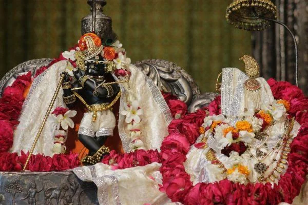
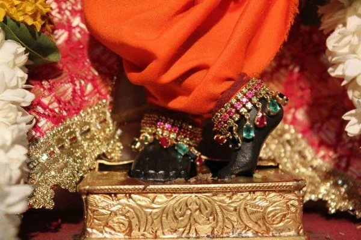

The Path of Love or the Path of Fear?
People call me a spiritual master, the one who is learned and has a grip on the scriptures and understands the essence of the Lord’s words. For me, the scriptures are important but I feel without
bhajan
all scriptures are ineffective and dry until or unless you attain sacred love (
prem
) for the Lord. Scriptures can give basic knowledge but realisation can only come from the performance of
bhajan
.
What is this
bhajan
?
The
Gopal Tapini Upanishad
states that bhajan is
ras
(nectar) and through the practice of
bhajan
, one is always content. But nowadays, I find that in
Bhakti Yog
, people have become more afraid. They are fearful because they chastise themselves by constantly thinking and believing that they are fallen souls. Some religious groups have their understanding of Gaudiya literature and their instructions can lead to a life lived in constant anxiety. The blissful mood, the happiness, the very charm of Bhakti Yog is missing from it. I have observed that people are being mechanical in their practice instead of being joyful.
I belong to an orthodox family but I am happy that I am not here to give the fear of hell or its fire. Devotion itself is a very complex subject and at the same time it is very simple. It depends on who is teaching and how one absorbs the instructions. Gaudiya philosophy is becoming more intricate now due to a variety of preaching from different religious factions and when there is no simple explanation for anything, I find myself feeling uneasy. Either the answers offered are very superficial or very complex.
Personally, after researching and practicing the teachings of the Gaudiya Sampraday and reviewing them against the teachings of various other groups, I came to the conclusion that the Gaudiya Sampraday philosophy is easy, full of bliss and not something to be dreaded. I have known many devotees who were not able to experience the
ras
, even after 20 years of practice. They were still unable have a deep sentiment of love for Krishn because they did not have realised
bhaav
, in other words an extreme state of attachment to the Lord. The constant fear of being a fallen soul had captured their minds and this fear wrapped and caged their hearts like an overgrowing vine. Their only resolution was to chant
Harinaam
every day for a specific number of rounds. And no one can deny the power of the Holy Name but whatever happened to the conviction that one is not a fallen soul the moment one receives the mercy of a spiritual master and
Harinaam
?
Spiritual aspirants are informed that by following rules and regulations, they can attain devotion. Unfortunately, the fear and anxiety of feeling impure hinders the growth of
bhaav
. There is no more free flow, no happiness, no feeling and no opening of the heart. A heart which cannot flourish and expand to accommodate more love only hardens over the years; therefore chanting the Holy Name becomes a robotic action. Those who feel they are fallen souls resign themselves to thinking that the fulfilment and realisation of love for the Lord is beyond the means of their reach; that the possibility of its achievement will take place in the distant future or even after death. This is not the definition of Gaudiya practice. Gaudiya philosophy is not only the practice of some regulative principles and these principles alone cannot blossom the flower of devotion in one’s heart. Gaudiya practice places more emphasis on emotional practice, instead of purely physical, although physical involvement is necessary. But without the use of feelings, we cannot grow in a way which can lead us to
manjari bhaav
, the mood which was practiced and instructed by our previous acharyas.
This emotional connection is not be confused with the worldly emotions which can be irrational, illogical and destabilising. When we talk about our previous
acharyas
, we say that they are eternal servants or by their
bhajan
they had received the
manjari bhaav.
Yes, some people have misused this practice but still there are many elevated souls who have created milestones for us by practicing the instructions and proving to us that Gaudiya philosophy is not merely a theory, it is the blissful reality of the teachings.
I remember a devotee who came to Vrindavan in search of the Lord and when Guru Maharaj prescribed six months of devotional practice with instructions for him to perform and asked him not to be fearful, in his fourth month of practice, the Lord with Radharani and the
gopis
appeared before him at the Radharaman Temple’s
Raas-Chabutara
(a theatre for the Divine Play). When he shared his realisation with me, I told him not to stop his devotional practice because this realisation showed that he was on the right path with the right mood.

It is most important to give people an approach to their emotions and a means to tap into their feelings. The most valuable question is: how can we give this treasure of devotion to Krishn to the ignorant and innocent people in a way that they can accept it? Some schools of philosophy place more importance on rules and regulations instead of imparting the nectar of Radha and Krishn, which was dearly relished by their own spiritual masters. We form connections through feelings and this is also the case when one wants to realise the Lord. We are not operating systems which only function by the execution of a correct syntax of code. In the same way, on the path of
Bhakti Yog
, we cannot connect ourselves to Krishn just by the execution of certain rules. This is why I feel that this
yog
has morphed into the path of Fearful
Yog
. I must clarify that rules and regulations are good to instil the aspirant with the quality of goodness (
sattva goon
) but the highest importance should be put on becoming
nirgun
(without qualities) and the uninterrupted practice of
bhakti
or devotion.
Devotion is attained by the practice of devotion not by solely cultivating the
sattva goon
. I have never read in the
Shrimad Bhagwatam
that those devotees who attained
Madhurya Bhaav
followed specific rules and regulations. Anyone is eligible to become a devotee of Krishn and there is no need to attain
sattva goon
by practicing some regulative principles, in the hope of attaining devotion. Even demons and animals were devotees of Krishn. I do not recall if they had to pass certain regulations first before devotion blossomed in their hearts.
In every era many persons whose personalities were
rajasik
(passionate) and
tamasik
(slothful or dark) attained Me by virtue of associating with My devotees. Some such persons were demons, while others were heavenly beings. Birds and beasts attained Me, and among humans, I have been attained by businessmen, simple labourers, women and others. Vritasur, Prahlad, Bali, Banasur, Maya and Vibhishan (born to demon families) attained Me, as did Sugriv, Hanuman, Jambavan, Gajendra, and Jatayu (animals). Tuladhar, Dharma-Vyadha, Kubja, the gopis and the wives of the Brahmins who were making the sacrificial offerings – all of them attained Me, though they performed no austerities, nor did they study scripture to great lengths or worship the great saints. They attained Me just by associating with Me and My devotees.
(
Shrimad Bhagwatam
, 11.12.3-7)
In fact, the goddess of devotion, Bhakti Devi, personally decorates the aspirant with the good qualities once one takes her shelter, just as the
gopis
and our previous
acharyas
did. The regulation itself creates the conditioning. Krishn Himself says that suppression does not make the path of devotion easier; in fact the converse is true. This is also the conclusion of psychology. We should allow aspirants to have a small dose of their minute pleasures or
maya
. They will vanish as soon as the higher taste is strong enough to replace the material pleasures. This process is very natural and grows gradually. If the potential of fear and threat is too high, the risk of destroying the plant of devotion (the vine of
bhakti
) also increases. The vine of
bhakti
must be strong enough to quench one’s need to experience worldly happiness, to have fulfilling material relationships, to take part in earthly activities and to have a fulfilling identity and life content which are temporary in nature. In the
Narad Bhakti Sutra
, aphorism 67 states, “Until one has attained devotion, one should not discard the good worldly activities. But devotion should be practiced renouncing the fruit of those activities.” It is foolish to think that sacred love cannot manifest as long as material lust is in the heart and it is unintelligent to believe that one has to conquer material lust first before one qualifies for sacred love for Lord Krishn.
This highest stage of devotion is
raganuga-bhakti
, the pure spiritual emotion of love towards Radha and Krishn in Golok Vrindavan (Their eternal Abode). This devotion is pure emotion and it starts to manifest itself when an aspirant has firm faith in hearing the
Raas-lila
of Lord Krishn and the
gopis
. Shri Chaitanya Mahaprabhu himself called the
Shrimad Bhagwatam
a spotless scripture. Thus, by doubting its words, one denies the truth imparted by Krishn: “A person who faithfully hears or describes the Lord’s pastimes of
Raas-lila
with the
gopis
of Braj attains supreme devotion of the Lord. He quickly becomes steady and conquers over the senses, giving up lust, the disease of the heart.” (
Shrimad Bhagwatam
, 10.33.39)
Here, I will try to simplify and summarise our Gaudiya practice, in other words what mood is essential to attain sacred love for Lord Krishn, which is the highest goal of life, “By following the footsteps of the inhabitants of Braj, one can attain the shelter of the Lord Krishn.” (
Chaitanya Charitamrit Madhya Lila
, 198)

In the abovementioned verse Chaitanya Mahaprabhu instructs a simple method whereby one can begin one’s journey on the path of devotion, “By following the footsteps of the inhabitants of Braj . . . .” In the
Brhad Bhagwatamrit
, Sanatan Goswami has given the sequence of great devotees who were not a part of Braj-
lila
: Prahlad Maharaj, Ambarish Maharaj, Hanuman, Arjun to Uddhav. Whenever we follow in the footsteps of these noble devotees, we follow the path of
vaidhi-bhakti
and we attain Vaikunth (the Abode of Vishnu) not Golok Vrindavan. One cannot enter Braj-
lila
with
vaidhi-bhakti
. The
Chaitanya Charitamrit Madhya Lila
(8.226) states how an aspirant can intimately associate with Krishn, “One can attain such perfection only by spontaneous love of the Lord. One cannot obtain Krishn in Golok Vrindavan simply by serving the Lord according to scriptural rules.”
What is the mood of Brajwasis or the mood of previous spiritual masters towards Krishn? These
acharyas
were
manjaris
or the maidservants of Radha.
There are three types of
gopis
:
1. One who has an inclination to serve Lord Krishn only
2. One who has an inclination to serve both Radharani and Krishn
3. One who has an inclination to serve Radharani only
2. One who has an inclination to serve both Radharani and Krishn
3. One who has an inclination to serve Radharani only
The third type of
gopis
can be further categorised into two kinds:
sambhogeccatmika
and t
at-tad-bhavecchatmika
. Of these, the
tat-tad-bhavecchatmika
gopis
are
manjaris
. They decorate Radharani to attract Krishn and compel Him to come and spend time with Her at a meeting place arranged by these
manjari gopis
. They derive unending pleasure by uniting the Two and become part of the divine play between Radharani and Krishn. The
manjaris
assist Radharani in meeting Krishn without any ulterior motive or gain for themselves.
The
Murali Vilas
(verse 6) says, “Shri Roop-manjari, Anang-manjari, and so forth, are attached and attracted towards the service of Radharani. They are happy in the Divine Couple’s bliss. Furthermore, they do not know anything else except this service.”
Narottam Das Thakur describes the same mood of Braj in his scripture, “Shri Roop-manjari, Shri Rati-manjari, Lavang-manjari, Manjulali, and Shri Ras-manjari eagerly and lovingly serve Radharani, supplying Her musk and various other articles. I am the follower of all these
gopis
(
manjaris
). I shall serve them with great love. I will completely understand their orders, even when couched in casual hints or gestures. I shall become immersed in wonder at their transcendental virtues and beauty, and I shall dearly love them. I shall always remain in their company. Immersed in the happiness of serving the Divine Couple surrounded by Their
gopi
-friends in Vrindavan, I will understand the
gopis
’ hints, and, taking up the
chamar
wisk I will fan the Divine Couple, and after that I will place betel nuts in Their moonlike mouths.” (
Prem Bhakti Chandrika
, verses 52-55)
The effect of
raganuga-bhakti
is more potent than that of devotion saturated in regulative principles. The
raganuga
devotee starts his devotional practice with feeling. Thus his experience has a completely different meaning. The feeling comes from within and gradually manifests externally. It is an experience which wholly belongs to our entire personality; it is a power from within.
In contrast, the practice of regulative principles is an external action, performed mechanically in the hope that a feeling will manifest. This does not necessarily happen although in certain cases this can happen. A more likely result of this external approach is that the action remains outside and does not allow deeper experiences of
bhaavs
. Therefore the progress on the path of regulative principles is much slower than the progress on the path of
raganuga-bhakti
. People sometimes say that
raganuga-bhakti
has to keep the same rules as the ones in
vaidhi-bhakti
. This cannot be true otherwise there is an implication that
raganuga-bhakti
is dependent on
vaidhi-bhakti
and inferior to it, which is not the case. In fully developed
raganuga-bhakti
the same actions are performed as in
vaidhi-bhakti
, in the form of rules and regulations, for instance all
aartis
, the detailed offering of the food, right through to
manas-seva
of
asta-kaliya-lila
which is performed according to a fixed schedule. But the
manas-seva
in
raganuga-bhakti
is not performed as rules or duties but as an inner desire that comes very naturally from the inner feelings. For example, Radha and Krishn must wake up at that specific time in the
asta-kaliya-lila
otherwise They cannot reach home before Their relatives wake up and find out that They are not in Their respective homes.
One who longs to hear about the pastimes of the inhabitants of Braj and asks himself how he can participate in these pastimes is an eligible candidate. In my experience, many people are interested in these topics, especially those who have already elevated themselves from the moralistic platform of religion and the mental concept of guilt and atonement. The moralistic devotees fear conversations involving Braj-
lila
because they suspect the speaker has an immoral attitude.
Why are they in fear? Their fear arises from only practicing regulative
bhakti
. The
Jaiva Dharm
(chapter 21) states, “The principles at work in
vaidhi-bhakti
are fear, respect and reverence, whereas the only principle at work in
ragatmika-bhakti
is greed, in relation to Shri Krishn’s
lila
.” So our devotees should really contemplate upon their practice. Chaitanya Mahaprabhu’s path, the path of the Six Goswamis of Vrindavan, the path of all of our
acharyas
, our Gaudiya path and my path is an experience of sublime bliss. All the staunch servants of ideology are quick to scare devotees by suggesting that they will forfeit their devotion as a punishment unless they maintain a strict adherence to the rules and regulations. We should not be too hasty in considering ourselves as sinful, impure and fallen, in order to fight against this impurity. Devotion is not dependent on any regulative principles. Bhakti manifests independently, out of her free will. In a conversation between Chaitanya Mahaprabhu and Ramanand Ray, Chaitanya Mahaprabhu stated that the point of devotion is not to act piously. Pious behaviour is no condition for
bhakti
. Chaitanya Mahaprabhu repeatedly says in the
Chaitanya Charitamrit Adi Lila
(3.15), “But simply by following such regulative principles one cannot attain the loving sentiments of the devotees in Braj.”
Thus, one really needs to revaluate himself or herself by asking if he or she is truly following the teachings of Shri Chaitanya Mahaprabhu and experiencing the joy Mahaprabhu and other acharyas felt. Is the path or procedure practiced by him or her leading to
raganuga-bhakti
? By suppressing emotions and believing himself or herself to be a fallen soul who is not worthy of attaining bhakti, in other words the practice of Fearful Yog, isn’t one needlessly placing a huge obstacle on the path to sacred love for the Lord.
Radhe Radhe!